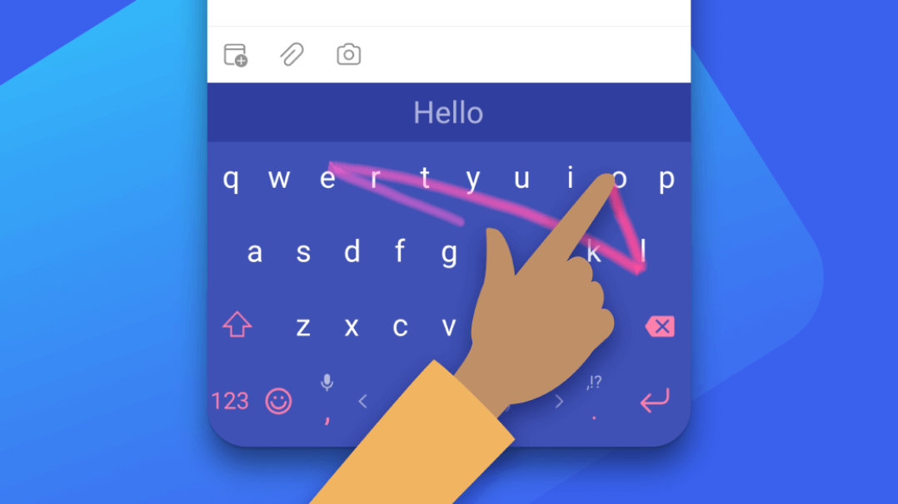
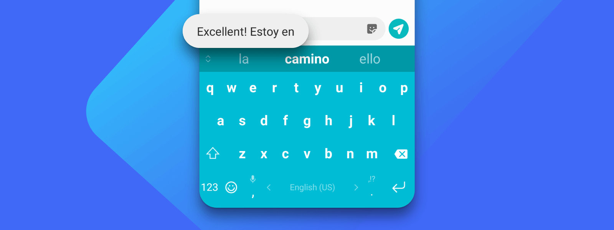

东京成田机场凌晨三点，我换掉了用了五年的输入法
一次跨境出差触发的输入法迁徙：从在机场写邮件卡到想摔手机，到朋友推荐的 SwiftKey 让我在候机厅完成了三封邮件加一份会议纪要。讲一讲这款键盘是怎么在几个小时里取代旧习惯的。
凌晨三点的成田机场
成田机场第三航站楼的候机区在凌晨三点像一座被遗弃的小型地下城——灯光冷白，便利店关了，自动贩卖机亮着零星的蓝灯。我攥着登机牌在一排金属椅子里找到唯一一个充电口，坐下来打开手机。
三天前临时接到通知，客户突然把原定下周的上海见面改成了这周五在东京开会。我手头的项目文档还没整理完，两个下属的周报压在邮箱里没回，更麻烦的是——我用了五年的那个输入法，此刻像一个故意刁难我的临时工。
问题在第二天就开始了。在从酒店去客户办公室的出租车上，我想给老板发一条简短的汇报，中英混合输入就卡壳了。打了个「项目 update 一下」，预测栏给的全是中文词，想切英文又找不到切换键藏在哪个角落。我烦躁地删了重打，手指在屏幕上戳得邦邦响。
更糟的是语音输入。我对着手机说「帮我打一封邮件，主题是关于 Q3 的 budget 重分配」，识别结果把 budget 打成了 budge，重分配变成了「重分配」但中间莫名其妙多了个空格，整段话读起来像机器翻译的日语说明书。我又重打了一遍。
朋友丢给我的一句话
候机厅里实在无聊，我在 Telegram 上跟一个长期驻扎东京的朋友抱怨输入法这件事。他没回我语音，过了大概五分钟，丢了一条消息过来：「换 SwiftKey。你会回来谢我的。」
我当时翻了个白眼。换输入法？五年了，我连那个输入法的皮肤都花了三十块钱买过，词库训练得服服帖帖的，换了不又得从头来？但凌晨三点的机场实在没事干，充电口旁边坐着我，手机里还躺着三封没写完的邮件。我顺便看了一眼SwiftKey官网的介绍，就点开应用商店搜了一下。
从官方下载到安装、设为默认输入法——整套流程不到两分钟。

机场候机厅的实战测试
第一次打开 SwiftKey 敲字的时候我还没抱多大期望。毕竟输入法这玩意儿，「预测准」这种事，你用了五年的那个肯定已经差不多了对吧？
但第一个词就给了我一个小惊喜。我打了个「机场」，预测栏的第二个候选是「候机」——不是「鸡场」也不是「积场」那种常见的同音字错误，就是我接下来很可能要打的那个词。我没管，继续打：「机场候机」。这次预测栏直接跳出了「厅里」。
我停下手指看了两秒。五年了，旧输入法从来没做到过这种事。不是没词库，是没把我此刻的上下文联系起来。凌晨三点在机场，打字大概率跟候机、航班、延误、登机有关——SwiftKey 好像知道我在哪。
然后我试了 Flow 滑行输入。我原来知道有滑行输入这玩意儿，但旧输入法的滑行轨迹识别总是不准，滑了三个字母能识别出八个字。SwiftKey 不一样，手指在屏幕上滑过，轨迹线跟着走，我甚至不用盯着键盘看，滑完抬起手指，整词就出来了。「东京成田机场」这六个字，我滑了三下就全出来了。

语音输入这次没让我想摔手机
之前的痛苦记忆还历历在目，我犹豫了一下才点了工具栏上的麦克风图标。SwiftKey 的语音输入界面很干净，一个红点在中间跳，识别结果直接实时显示在输入框里。
「帮我打一封邮件」，我说。结果出来了——几乎一字不差，甚至自动在后面加了个逗号。
「主题是关于 Q3 的 budget 重分配」。这次 budget 没有变成 budge，「重分配」也是干净的三个字。我又说了一遍完整的句子：「我想说明一下，我们这边需要把日本区的预算占比从 20% 提到 25%，因为这季度签下了两个新客户。」识别结果出来后，我只改了一个标点——把中文逗号改成了英文逗号。
后来去翻SwiftKey文档才知道，SwiftKey 的语音输入不是单纯识别完就完事的，识别结果会再走一遍它的 AI 预测引擎做二次润色。难怪专有名词和中英混输都比之前准那么多。
工具栏的意外惊喜
写完第一封邮件我抬头看了一眼航班信息——还有四十分钟登机。闲着也是闲着，我开始折腾 SwiftKey 的工具栏。
默认显示六个图标：预测栏、表情、GIF、剪贴板、翻译、三点菜单。我是个重度表情党，但写邮件的时候表情是真的多余。按照文档里推荐的「正式文档场景」配置，我把工具栏调整成了 Copilot、翻译、剪贴板、光标移动、三点菜单。表情和 GIF 被我藏进了三点菜单里，聊天的时候再放出来。
最实用的是长按工具栏空白处就能进编辑模式——我不用特意退出应用跑到系统设置里调，直接在键盘上就能拖拽排序。常用的拖到最左边，打开就能看到。
我还注意到一个细节：SwiftKey 会根据使用频率动态调整工具栏图标的优先级。我昨天刚把翻译从工具栏拿掉，今天它自己又悄悄排到了第二的位置——可能是因为我在日本这两天中英混输太多，SwiftKey 学到了。
回家之后的持续真香
回国飞机上我翻了一下 SwiftKey 的设置，发现它可以直接用 Microsoft 账号登录。我掏出电脑打开 OneNote 记了点东西，然后手机上 SwiftKey 的云端剪贴板里就自动出现了我刚才复制的那段文字。之前为了手机和电脑之间传一段代码或者一段报价，我要么用文件传输助手，要么自己给自己发邮件。现在就简单多了——电脑上复制，手机上键盘顶栏直接弹出来，点一下就粘贴。
还有主题。旧输入法的皮肤是真好看，但 SwiftKey 的主题胜在干净——有一款是深蓝底加白色极简线条，配我手机的黑色背板刚好。自定义主题也能做，但文档里提醒说背景图别太大，亮度调到 40% 以下，不然切换的时候容易闪退。我看了看系统默认的几款主题，够用了，懒得折腾。
一点小遗憾和一个结论
不是说 SwiftKey 完美无缺。中英文混合输入方面，它还是不如国内那几家本地化做得好的输入法——比如打一个带数字的英文缩写加中文描述，预测引擎偶尔会卡住。还有 Copilot 功能需要登录 Microsoft 账号才能用，虽然免费账号就行，但如果网络代理限制了 Azure 的连接，那翻译和 AI 改写就用不了了。
但这些在我过去这三周的使用里，加起来发生了不到三次。反过来，Flow 滑行每天至少用五十次，语音输入在出租车上、餐厅里、走路的时候用了十来次，预测引擎帮我省下的删除重打次数……可能每天有上百次。
五天前我在机场蹲在充电口旁边换输入法的时候，以为这是一次麻烦但必要的迁徙。现在看来，那更像是一次捡漏——我用了五年的旧习惯挡住了一个更好用的东西。如果你也在犹豫换不换，不如找个凌晨三点要赶红眼航班的机会试试。
补充一句，这篇文章里我提到的所有细节都可以在文档里找到——从工具栏自定义的快捷键组合，到语音输入的最佳实践，再到如果遇到问题该怎么排查。文档维护得相当勤快。另外，相关资料在GitHub、Gitee、GitCode都有维护，不同地区访问哪个顺手就用哪个。